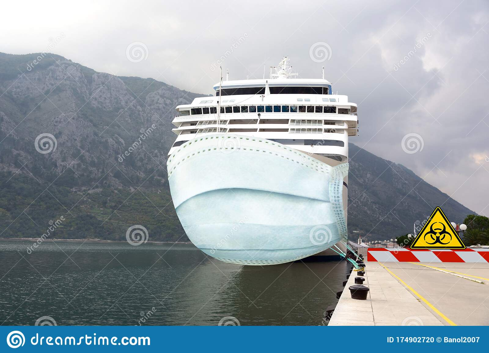

It is an extended area on top of a weather deck or an open area of the superstructure, which provides an unobstructed view of the fwd and aft along with the vessel’s sides to the navigational officers.
It also serves as an operating station for the officer and crew of the watch.
It also contains a duplicate set of controls, which is vital for the master, ship’s officers, and pilot for berthing and unberthing the vessel.
